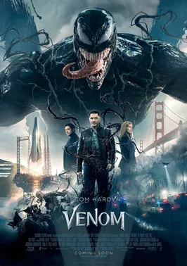

The genetics
Genetics is marginal in the film; its science fiction is about alien symbiosis, not DNA. The connection is the villain's background: Carlton Drake is introduced as a prodigy who, at 19, discovered a gene therapy that tripled the life expectancy of pancreatic cancer patients, before becoming head of the Life Foundation and turning to space exploration. The film thus uses a past in genetics to establish him as a brilliant biomedical scientist whose ambition later leads to unethical human experimentation. His scientists, notably Dora Skirth, are disturbed by the trials, and Skirth's decision to help expose them makes her the film's conscience. The portrayal fits a familiar type: the charismatic biotech founder who believes his goals justify sacrificing vulnerable people. Gene therapy for cancer is an active area of research, though no single therapy has produced the dramatic gains attributed to Drake.
The story
A space probe belonging to the Life Foundation, a bioengineering corporation run by the visionary entrepreneur Carlton Drake, brings back from a comet several samples of symbiotic alien lifeforms that need a host to survive. Drake, convinced that merging humans with symbiotes could help humanity survive, begins secret human trials, using vulnerable people, including the homeless, as test subjects, many of whom die. Investigative journalist Eddie Brock, who lost his job and fiancée after confronting Drake about these trials, breaks into the lab with the help of a disturbed Life Foundation scientist, Dora Skirth, and a symbiote bonds with him. It calls itself Venom and gives Eddie superhuman abilities. Meanwhile another symbiote, Riot, travels from Malaysia and bonds with Drake, who plans to bring more symbiotes back from space. Venom, now attached to Eddie and to Earth, defeats Riot and destroys Drake's space probe.